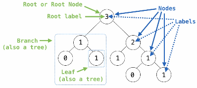

Trees
Table of Contents
1. Trees
A tree is a hierarchical data structure that is used to represent data. Every tree has a root as well as a list of branches, where every branch is another tree. A tree with zero branches is called a leaf. Each location in a tree is called a node, which contains some value that is its label. One node can be the parent or child of another node:

1.1. Tree Abstraction Implementation
We can implement a tree by considering that each tree consists of a root label and a list of branches:
def tree(label, branches=[]):
for branch in branches:
assert is_tree(branch)
return [label] + list(branches)
def label(tree):
return tree[0]
def branches(tree):
return tree[1:]
def is_tree(tree):
if type(tree) != list or len(tree) < 1:
return False
for branch in branches(tree):
if not is_tree(branch):
return False
return True
We can also use a class to implement a tree:
class Tree:
def __init__(self, label, branches=[]):
self.label = label
for branch in branches:
assert is instance(branch, Tree)
self.branches = list(branches)
1.2. Tree Processing
In practice, one does not usually manually define trees; instead, they are generated programmatically. Processing trees are also generally done using recursion, with the base case typically being processing a leaf.
Example: Fibonacci tree
An example of generating a tree programmatically is with the Fibonacci sequence:
def fib_tree(n):
if n <= 1:
return tree(n)
else:
left, right = fib_tree(n - 2), fib_tree(n - 1)
return tree(label(left) + label(right), [left, right])
Example: Counting leaves
We can use recursion over a tree to count the number of leaves in the tree:
def count_leaves(t):
if is_leaf(t):
return 1
else:
return sum([count_leaves(b) for b in branches(t)])
Example: Pruning trees
Sometimes, we want to remove subtrees that satisfy certain criteria from a tree: this process is called pruning. Let's say we are given a Tree class, and we want to prune all the sub-trees whose root label is n:
def prune(t, n):
t.branches = [b for b in t.branches if b.label != n]
for b in t.branches:
prune(b, n)